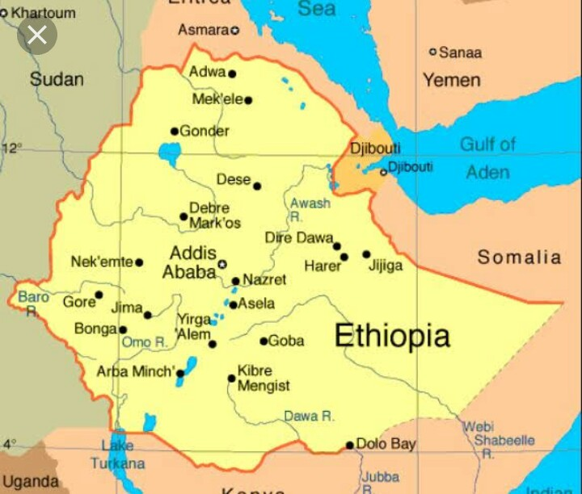

Ethiopia is a multi cultural and multi ethnic country. Religion is a major infuluence in
Ethiopia life.Nearly half the population belongs to the Ethiopia Orthodox church but there is
also large muslim population.others adhere to an ancient form of judaism.ethiopia isa landlocked country
on the horn of Africa, in the eaast of the contient. It is bordered by dijbouti,eritrea, Kenya, Somali,
South Sudan,Sudan and Somaliland(somalia).

The country covers an area of 1,126,829km^2, this is about twice the size of France or th U.S state of texas. The highest elevation is mount ras dashen, with 4620m. And dalol dankil is the lower place in Ethiopia below sea level.
A population of more than 114 million inhabitants makes the country the second most populous nation in afica behind Nigeria. The country comprises more than 80 ethni groups and as many languages.
Ethiopias economy is primarily based on aggriculture. More than 70% of the Ethiopian population is employed in agriculture. In recent years, services have replaced agriculture as the main source of GDP.